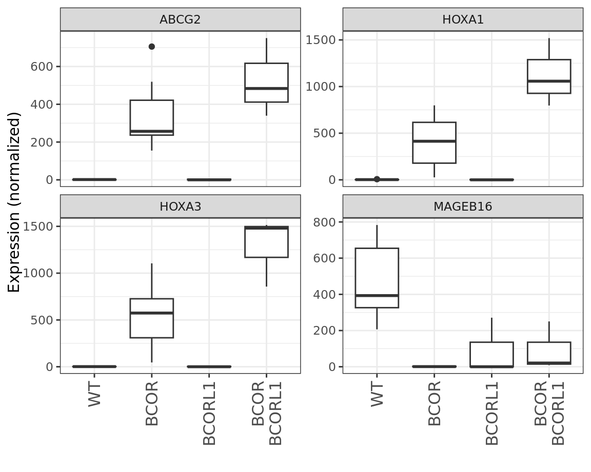

Boxplot of Gene Expression by Treatment
A boxplot summarizes the distribution of expression levels for a single gene across samples, grouped by treatment or experimental condition. Each box represents one treatment group and shows the median expression, interquartile range, and overall spread of the data, while individual points (if shown) correspond to measurements from individual samples. This visualization provides an intuitive view of both the central tendency and variability of gene expression within and between treatments.
By comparing boxplots across treatments, it becomes straightforward to assess whether a gene shows consistent differences in expression between conditions and how much overlap exists among replicates. Large separations between group medians with relatively small within-group variability suggest robust differential expression, whereas substantial overlap indicates weaker or more variable effects. Boxplots are therefore well suited for inspecting candidate genes identified by genome-wide analyses and for communicating results in a biologically interpretable way.
The appearance and interpretation of boxplots depend on normalization, transformation, and sample size. Expression values are often log-transformed or variance-stabilized to reduce skewness and make differences easier to compare. With small numbers of replicates, apparent differences may be driven by individual samples rather than systematic effects. Consequently, boxplots should be interpreted alongside statistical test results and in the context of the overall experimental design and data quality.
